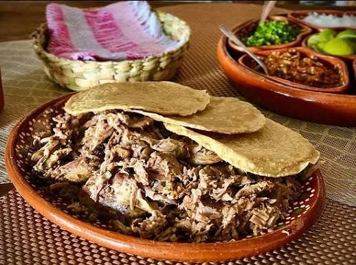

Especialidad Local
Barbacoa de Borrego en Horno de Tierra
Preparada de manera ancestral envuelta en pencas de maguey y cocida a fuego lento bajo tierra. Acompañada de su tradicional consomé con garbanzos y tortillas hechas a mano.